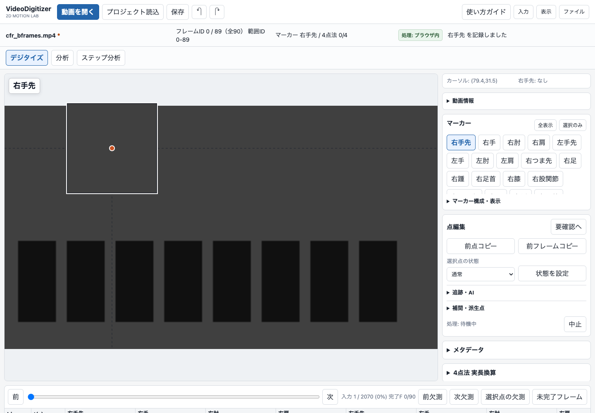
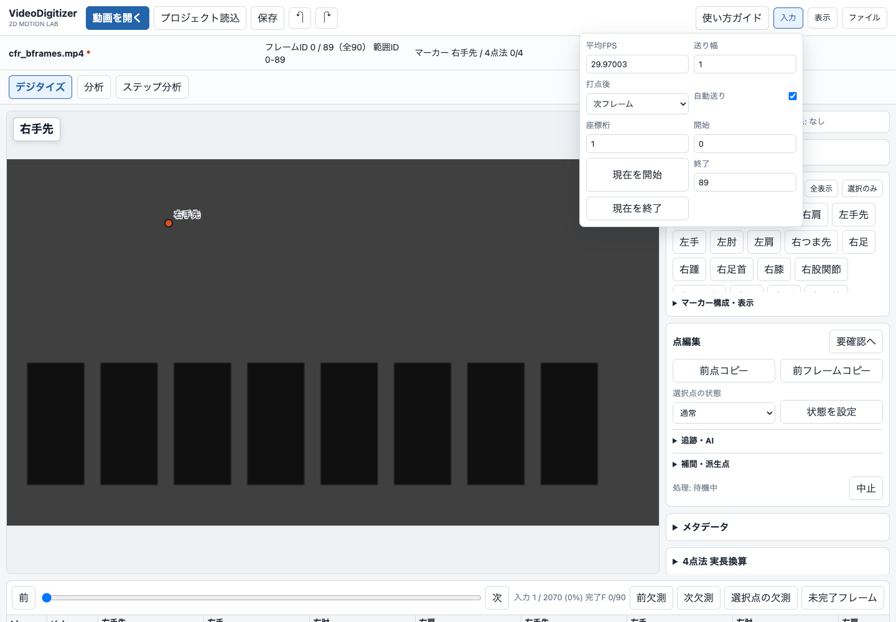
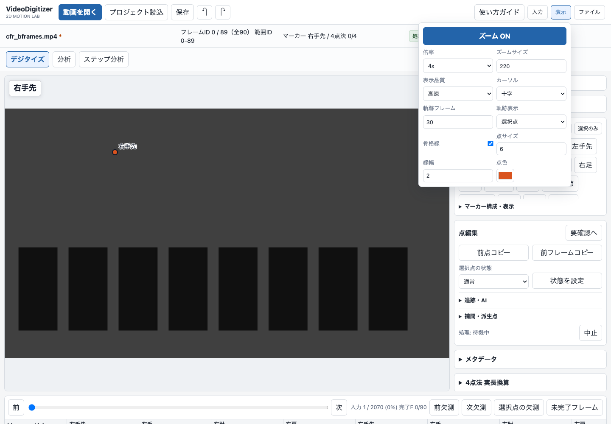
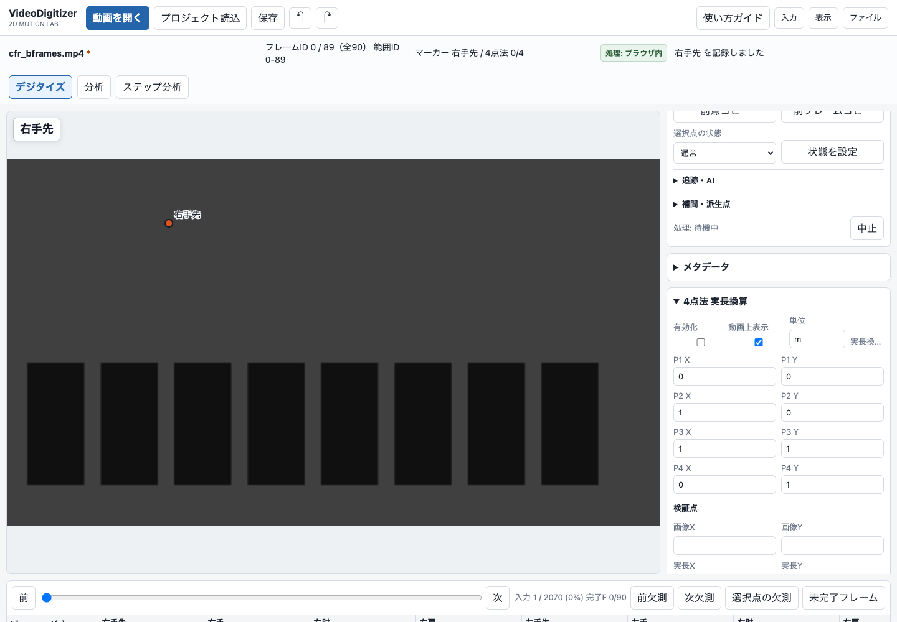
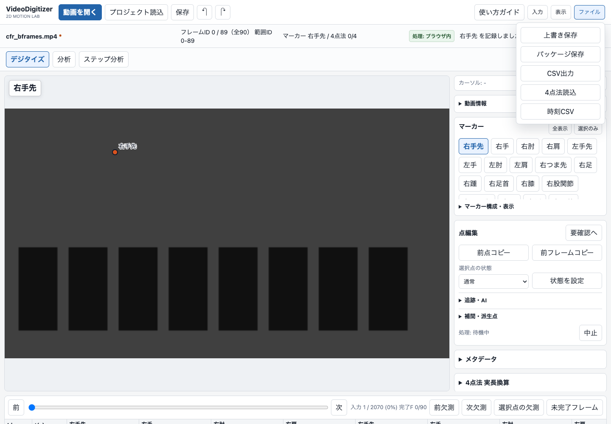

使い方ガイド
動画を開き、調べたい位置に点を打ち、座標を保存します。まずは短い範囲で試してみましょう。
Web版を中心に説明しています。Macアプリ版だけの機能は本文に明記しています。スクリーンショットの動画は操作確認用のサンプルです。
該当する項目がありません。「保存」「ズーム」など短い機能名で探すか、検索をクリアしてください。
はじめて使う・基本操作
最初の打点
1.「動画を開く」で動画を選びます。
2. 右側の「マーカー」で記録したい点を選びます。
3. 動画のその点をクリックします。
初期設定では打点後に次フレームへ進み、範囲の最後に打つと次マーカーの開始フレームへ戻ります。

開始・終了フレームと送り幅
上部の「入力」を開き、「開始」「終了」にフレームIDを入力します。IDは0から始まります。「送り幅」が2なら2コマずつ進みますが、終了を超える場合は最終コマで止まります。最後のコマに打点すると、次マーカーへ移って開始フレームへ戻ります。範囲指定は元の動画ファイルを切り取る操作ではありません。

クリック後の移動を変える
「入力」の「自動送り」をOFFにすると打点しても移動しません。「打点後」で「次フレーム」「次点→次フレーム」「次点」を選べます。Shiftを押しながらクリックすると、その打点だけ同じフレームに留まります。
ズームと座標の精度
上部の「表示」でズームのON/OFF、倍率、表示サイズを変えます。拡大表示は動画上のカーソル周辺に出ます。「入力」の「座標桁」で小数点以下の桁数を変更できます。座標は元動画のピクセルを基準に保存されます。小数桁やズームを増やしても、動画に写っていない細部や測定精度が増えるわけではありません。

マーカーの名前・表示を変える
右側の「マーカー」で対象の点を選びます。「マーカー構成・表示」で点の構成や表示を調整できます。「全表示」「選択のみ」で画面上の表示対象を切り替えられます。マーカーを非表示にすることと、座標データの削除は別です。
点の軌跡を残す
「表示」の「軌跡表示」で選択点、同側、全点、非表示を切り替えます。「軌跡」で過去何フレーム分を表示するか設定します。表示する点や区間を減らすと描画負荷も抑えられます。
座標の編集・確認
Excelのように表をコピー・貼り付け
画面下の座標表でセルをドラッグして範囲選択します。MacはCommand+C / Command+V、WindowsはCtrl+C / Ctrl+Vでコピー・貼り付けします。x,yが1セルに入った形式と、xとyが別セルの形式に対応しています。Delete / Backspaceは選択セルの座標を削除します。作業前に保存し、貼り付け先のフレームとマーカーを確認してください。
前の点をコピー・欠測を補間
「点編集」の「前点コピー」は前の入力済みフレームから選択点を、「前フレームコピー」は全マーカーをコピーします。「補間・派生点」では欠測区間を補間できます。補間は観測した点ではなく推定値なので、速い動きや遮蔽の区間では必ず確認してください。
欠測・要確認点のチェック
点を判別できない場合は、無理に打たず「選択点の状態」で遮蔽、画面外、判別不能などの理由を設定します。「未完了フレーム」「次欠測」などで抜けを確認できます。分析画面の出力前チェックも確認してください。
4点法・時刻の設定
4点法のキャリブレーション
4点法は、画像上の4つの固定点と、対応する実際の座標を結びつける設定です。
1.「ファイル」→「4点法読込」で、固定点4点を記録したJSONやCSVなどを選びます。
2. 右側の「4点法 実長換算」でP1〜P4に対応する実座標と単位を入力します。
3. 入力値を照合して「実寸入力済み」をONにし、確認画面でもう一度確認します。
4.「有効化」をONにし、較正に使っていない既知の距離で結果を確認します。
初期の(0,0),(1,0),(1,1),(0,1)は仮の値です。「実寸入力済み」を確認するまで実長換算には使われません。4点と測定対象が同じ平面にあることが前提です。奥行きのある動きを3Dに変換する機能ではありません。
測定上の注意：固定したカメラで、4点と測定対象を同じ平面に置きます。4点は重複せず、どの3点も一直線にならない配置にしてください。奥行きのずれやレンズのゆがみは誤差になります。較正に使った点だけでなく、別の既知の距離・検証点で確かめてください。

4点の読み込み・並び順
「4点法読込」はプロジェクトJSON、CSV/TSV、x,yの4行データなどを読み込みます。固定点は表の末尾のcalib_p1〜calib_p4に表示され、全フレーム行に同じ値が入ります。画像上のP1と実座標のP1が同じ点になるよう、4点の対応順を必ず確認してください。実座標の初期値は仮の値です。実験の寸法と単位に合わせて変更してください。一列に並んだ4点では平面の換算を決められません。
スロー動画のFPS・時刻
撮影FPSと再生FPSは、スロー動画では異なる場合があります。Web版は対応MP4/MOVのフレーム時刻を使ってコマを対応させます。ステップ分析の「撮影FPS」はカメラ設定を確認して入力し、確認できた場合だけ「撮影FPSを確認済み」をONにします。見た目から撮影FPSを推測しないでください。
保存・書き出し
プロジェクトを保存・再開する
上部の「保存」、または「ファイル」の保存メニューからプロジェクトを保存します。JSON / .vdprojには打点した座標、マーカー、範囲、較正や表示の設定などが含まれます。動画そのものは含まれません。再開時は「プロジェクト読込」で保存ファイルを選び、その後に同じ元動画を開いてください。同じプロジェクトを複数タブで開くと自動保存と上書きを停止します。片方を閉じるか「別コピーで保存」で分岐してください。ブラウザによっては上書き保存の代わりにダウンロードになります。

CSVに座標を書き出す
「ファイル」のCSV出力を選び、出力前チェックを確認します。指定範囲内の全フレームを出力し、未入力の座標は空欄になります。4点法の実長換算が有効なら実座標と単位の列も付き、元のピクセル座標も残ります。CSVは分析用、プロジェクトJSON / .vdprojは作業再開用です。
保存先・Googleログイン・クラウド
Web版の選択動画はブラウザ内で処理し、動画や画像をサーバーへアップロードしません。自動保存は同じブラウザのIndexedDBです。Web版にはGoogleログイン機能はありません。Macアプリ版のクラウド同期は別機能で、設定済みの環境でログインし、明示的にONにした場合だけデジタイズデータを同期します。重要な作業はプロジェクトファイルでも保存してください。
分析・追跡
分析とデジタイズは独立している？
「分析」タブのフレーム位置はデジタイズ画面と独立して動かせます。距離、角度、速度、加速度、欠測などを確認できます。ただし元の動画とデジタイズ座標は共通です。点の修正は分析結果にも影響します。「比較・再測定」は一致した同一フレーム・同一マーカーだけを使い、全体の2D差に加えてマーカー別のX/Y差を表示します。実長の距離や速度には適切な較正と時刻設定が必要です。
AI姿勢候補を使う
右側の「追跡・AI」からAI姿勢候補を実行します。候補は「候補を採用」「このFを一括採用」で採用するまで確定座標に入りません。胸骨上縁、耳珠点、頭頂、左右の「足」などはモデルとの定義が一致せず候補を生成しません。AI候補を研究の確定測定値として無確認で扱わないでください。
画像追跡と高精度AI追跡
最初の点を手入力し、「次F画像追跡」または「範囲を画像追跡」を実行します。始点と終点を手入力して両方向追跡する方法もあります。追跡点は誤りがないか画像と照合します。高精度AI追跡(TAPNext++)はMacアプリ版の機能で、Web版の軽量画像追跡とは別です。
ステップ分析の使い方と限界
「ステップ分析」で範囲、撮影FPS、対象者を確認して「AI分析を実行」を押します。接地イベントを動画と照合し、誤りは修正します。現在のWeb版はMediaPipeの軽量代替を使い、MMPoseやBoT-SORTが実装済みという意味ではありません。試験機能であり、診断や競技判定には使わず、未確認の自動値を研究の確定値にしないでください。
困ったとき
動画を開けない・コマが進まない
作業中なら先にプロジェクトを保存し、ページを再読み込みしてから同じ動画を選び直します。クラウド上のファイルは端末へのダウンロード完了を確認します。Web版の対応は拡張子だけでなくコーデックやブラウザに依存します。時刻を照合できない動画は停止します。解決しない場合は別ファイルとして通常のMP4/H.264に書き出し、元動画も残してください。変換後はフレーム対応を再確認します。